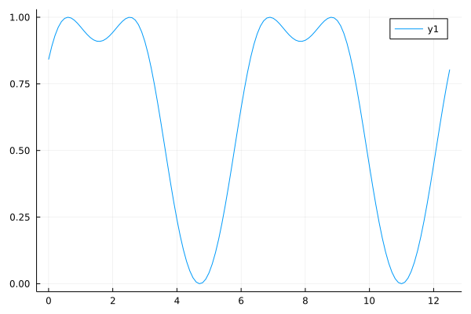
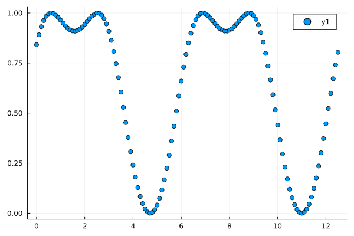
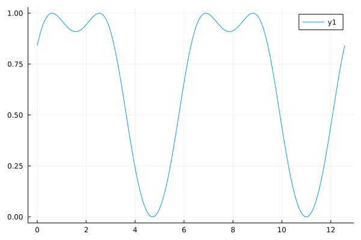
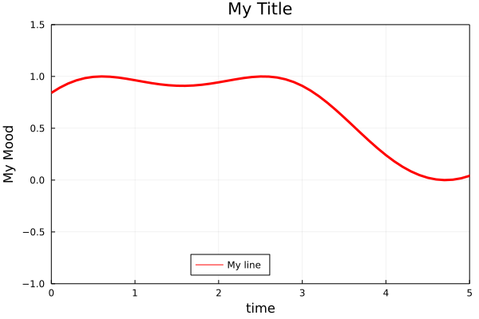
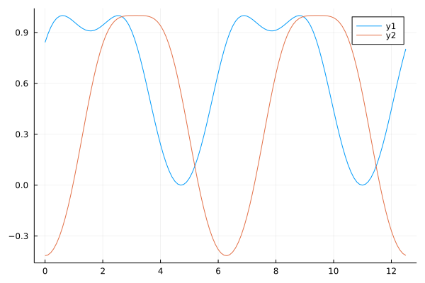
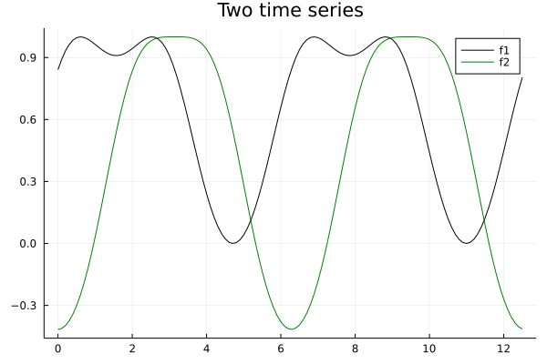
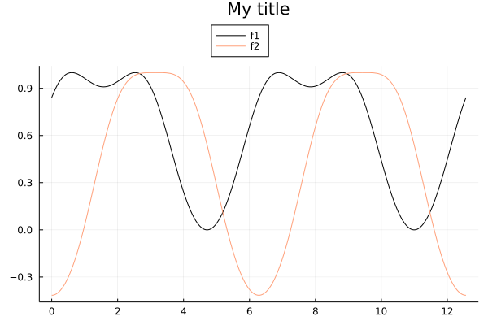
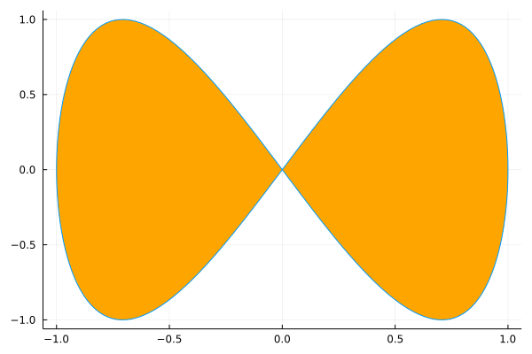
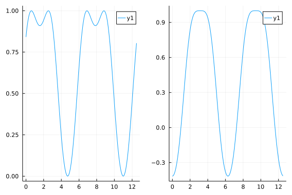
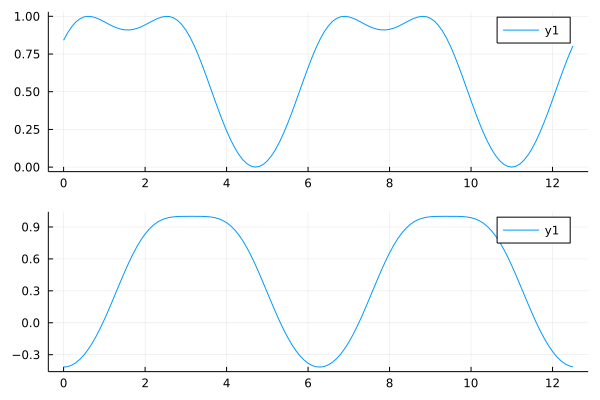

Plotting with Julia
Contents
Plotting with Julia#
Plots.jl: powerful and convenient visualization mwith ultiple backends. See also Plots.jl docs
PyPlot.jl:
matplotlibin Julia. See also matplotlib docsMakie.jl: a data visualization ecosystem for the Julia programming language, with high performance and extensibility. See also Makie.jl docs
using Plots
f(x) = sin(sin(x) + 1)
f (generic function with 1 method)
xs = 0.0:0.1:4pi
0.0:0.1:12.5
ys = f.(xs)
126-element Vector{Float64}:
0.8414709848078965
0.8911317861333838
0.9315560826328598
0.9623501813639228
0.9835960588100923
0.9958285928692856
0.9999810651039218
0.9973058625146969
0.9892793281920914
0.9775002586636391
0.9635907245418334
0.9491060405792519
0.9354583090330478
⋮
0.08058400266618558
0.12422607398385804
0.17624596561456454
0.2357754296709225
0.30169969146476955
0.3726498227859906
0.44701633928081586
0.5229877415734713
0.5986147895910303
0.6718978181818495
0.7408908673778799
0.8038134083524772
# Line plots connect the data points
plot(xs, ys)

# scatter plots show the data points only
scatter(xs, ys)

# you can plot functions directly
plot(f, xs)
# plot a function with a range
plot(f, 0.0, 4pi)

# Customizations
plot(f, xs,
label="My line", legend=:bottom,
title="My Title", line=(:red, 3),
xlim = (0.0, 5.0), ylim = (-1.0, 1.5),
xlabel="time", ylabel="My Mood", border=:box)

Multiple series: each row is one observation; each column is a variable.
f2(x) = cos(cos(x) + 1)
f2 (generic function with 1 method)
y2 = f2.(xs)
126-element Vector{Float64}:
-0.4161468365471424
-0.4115989626245442
-0.39793995394658593
-0.37513292022522066
-0.3431464165959406
-0.3019964901426669
-0.251799567898706
-0.1928303905605429
-0.12557796104012148
-0.050791777273393006
0.030489295156121407
0.11693208142980759
0.2069325218043063
⋮
0.17637792096399765
0.0873799893855719
0.002506694401771309
-0.07672453661400838
-0.14907836040441386
-0.21361508187450767
-0.2696770419201289
-0.31685309804973233
-0.35492824797420097
-0.38382617162484306
-0.40355226239464964
-0.41414381043612153
plot(xs, [ys y2])

# Plotting two functions with customizations
plot(xs, [f, f2], label=["f1" "f2"], lc=[:black :green], title="Two time series")

# Building the plot in multiple steps
# in the object-oriented way (recommended)
xMin = 0.0
xMax = 4.0π
p1 = plot(f, xMin, xMax, label="f1", lc=:black)
plot!(p1 , f2, xMin, xMax, label="f2", lc=:lightsalmon)
plot!(p1, title = "My title", legend=:outertop)

# Parametric plot
xₜ(t) = sin(t)
yₜ(t) = sin(2t)
plot(xₜ, yₜ, 0, 2π, leg=false, fill=(0,:orange))

# Subplots
p1 = plot(f, xs)
p2 = plot(f2, xs)
plot(p1, p2)

plot(p1, p2, layout=(2, 1))

Vector field#
Plots.jl#
# Quiver plot
quiver(vec(x2d), vec(y2d), quiver=(vec(vx2d), vec(vy2d))
# Or this
quiver(x2d, y2d, quiver=f) # Where f = (x,y) -> (vx, vy)
See also: Using quiver plots in Plots.jl
PyPlot.jl:#
quiver(X2d,Y2d,U2d,V2d)
See also: Using quiver plots in PyPlot.jl and matplotlib: quiver plot
using Plots
# ∇ = \nabla <TAB>
function ∇f(x, y; scale=hypot(x, y)^0.5 * 3)
return [-y, x] ./ scale
end
# x mesh and y mesh
r = -1.0:0.2:1.0
xx = [x for y in r, x in r]
yy = [y for y in r, x in r]
quiver(xx, yy, quiver=∇f, aspect_ratio=:equal, line=(:black))